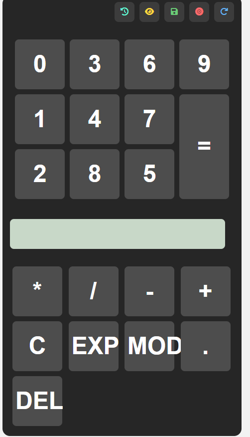

A fully functional calculator with complete history tracking system
The following steps outline my chronological approach to building this calculator:
Designed the calculator layout and identified all required features: record, preview, retrieve, delete, and clear history. Created wireframes and planned the user interface.
Created the HTML structure with a clean display area and button grid. Styled the calculator using CSS with a modern, responsive design. Implemented basic arithmetic operations using JavaScript.
Implemented all history-related functions: Record (save calculations), Preview (view last calculation), Retrieve (bring back previous calculation), Delete (remove single entries), and Clear History (remove all entries).
Thoroughly tested all features to ensure they work correctly. Fixed bugs and refined the user experience. Tested edge cases and error handling.
Pushed the complete code to GitHub for sharing and collaboration. Created documentation to explain the features and functionality.
The calculator includes the following essential features for tracking calculations:
What it does: Saves the current expression and result into the history stack.
What it does: Displays the last recorded calculation on the screen without saving it again.
What it does: Restores a previous calculation from history back into the active display.
What it does: Permanently deletes all saved entries from the history stack.
What it does: Removes one specific entry from the history list.
What it does: Removes one character at a time from the current expression.
What it does: Clears the entire current expression at once.
history = [
{
expression: "12 + 34",
result: 46,
timestamp: "2026-08-06 14:32:00"
}
]
history.push({ expression, result, timestamp })last = history[history.length - 1]last = history.pop()history = []expression.slice(0, -1)expression = ""Below are screenshots showing my calculator interface and history features.

Figure 1: Calculator main interface